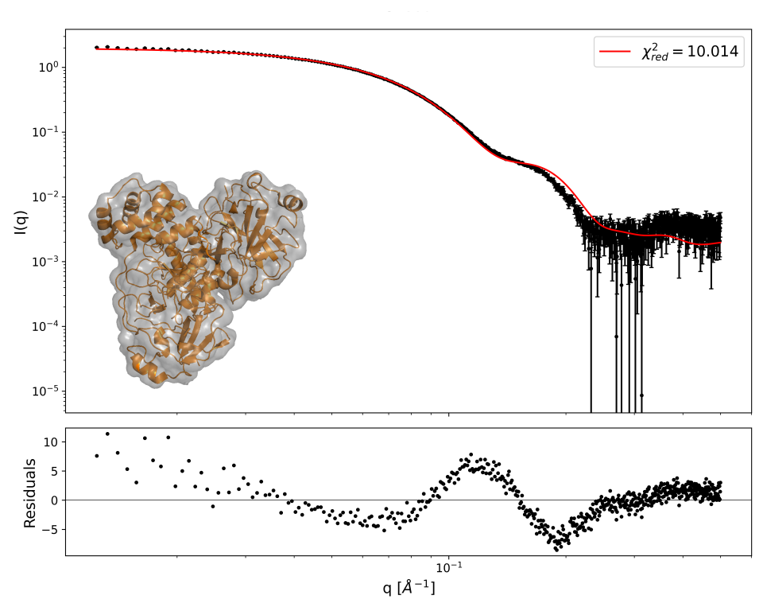
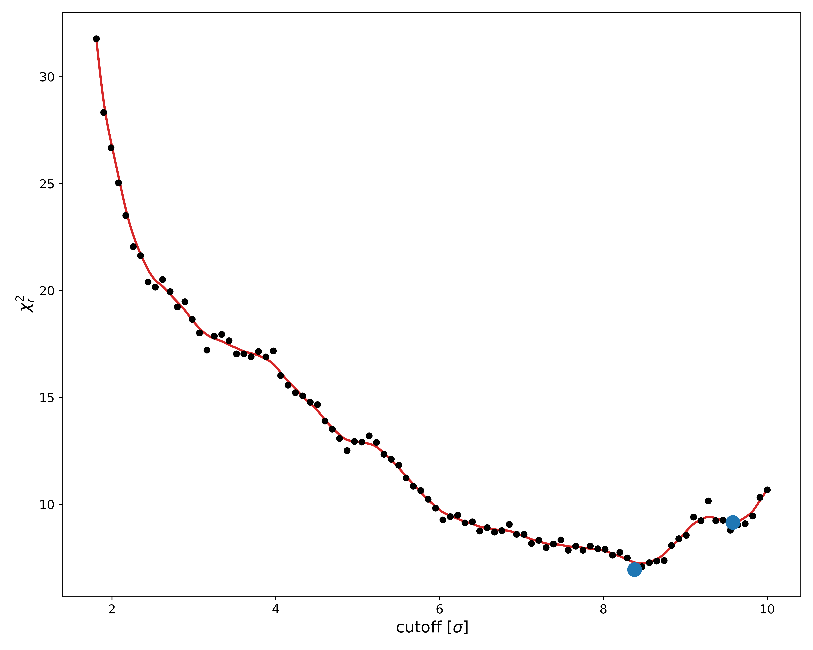
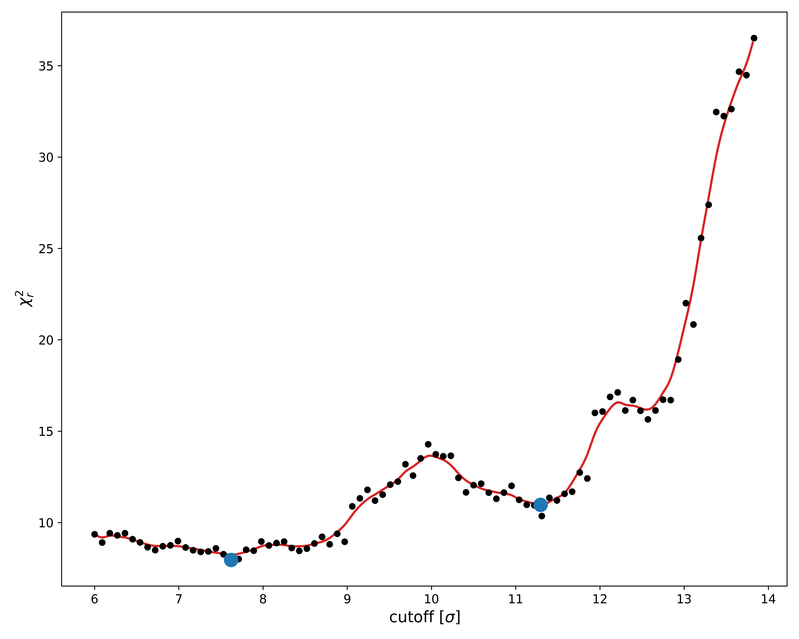
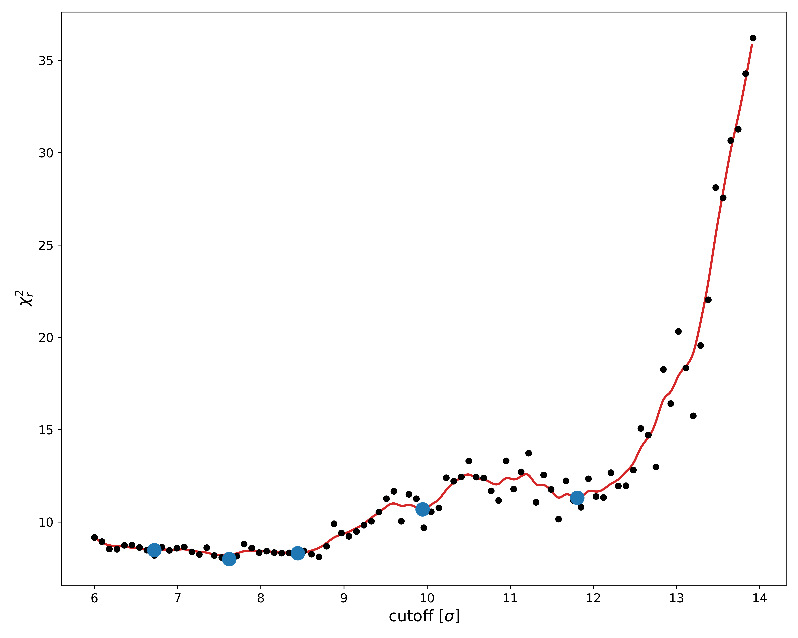

Home
Tutorial: Comparing with Electron Microscopy
Contributors: Kristian Lytje, Jeppe Breum Jacobsen

Black: SAXS data. Red: fit from EM map using AUSAXS. The grey shape is the optimized structure. The atomic structure is shown in orange. From: https://doi.org/10.1107/S2059798324005497
Before you start
- Requirements:
(1) The AUSAXS software (free, no installation).
(2) Python (including numpy, scipy, and matplotlib) to visualize the results.
(3) A qualitative understanding of SAXS data is advantageous, but not required. See for example Tutorial: Primary Data analysis. - Expectations:
In this tutorial, we will compare small-angle X-ray scattering data with electron microscopy data.
These are very different techniques, with the former probing the electron density of the sample, and the latter probing the charge density.
We are therefore not expecting perfect quantitative agreement, but will rather focus on comparing them qualitatively.
Learning outcomes
In this tutorial you will learn how to use the EM validation program of the AUSAXS software to compare SAXS data with electron microscopy data.- Be familiar with the AUSAXS software.
- Be able to validate an electron microscopy map.
- Be able to use the advanced options of the program.
Introductory remarks
This tutorial will only showcase how to use the method, and will not go into the details of the theory behind it.
For more information on the theory, see the accompanying article at https://doi.org/10.1107/S2059798324005497.
Part I: Making AUSAXS run on your computer
AUSAXS ships with two versions: one with a simple, graphical interface, and another with a more advanced command-line interface.Both versions can be used for this tutorial.
- To use AUSAXS:
- Download the newest release from https://github.com/AUSAXS/AUSAXS/releases
- Since Microsoft & Apple both require yearly fees to sign a program, an additional platform-dependent step must be performed to make it runnable on these systems:
- Windows: Your SmartScreen filter may warn you about running unsigned software. You can simply ignore this warning and run it anyway. The first time you open the program can take a bit longer, as SmartScreen may decide to run a quick scan of it.
- Mac: Downloaded unsigned programs are not runnable by default. To change this:
- Graphical interface: Shift-click the program and hit "open". This will allow you to run it despite it being unsigned.
- Terminal: Navigate to the downloaded folder using
cd <path>.
Then make the program runnable using the commandchmod 755 em_fitter_gui
Part II: Performing a basic validation
Now we are ready to perform our first validation. Download the files:- The SAXS measurement
- The EM map file Remember to unpack the zipped map before continuing.
- Graphical interface:
If you have moved the program from the downloaded folder, make sure to also move the plotting script to the same destination.
Open the AUSAXS programem_fitter_gui.exeand load the EM map and the SAXS data.
For this run only, set the "sample frequency" to 2 (and make sure to hit "enter"!). Then click the "start" button.
You might have to also run theplot.exeprogram to generate the plots. - Command-line interface:
Move all files to the same directory, and launch a terminal from there.
Then run the command:em_fitter emd_24889.map SASDJG5.dat --frequency 2 --qmax 1 - Windows:
./plot.exe - Mac or Linux:
python scripts/plot.py - A "report.txt" file
- An "ausaxs.fit" file
- Various plots (if you don't see any plots, run the
plot.exeprogram.) - Various "*.png.plot" files
- A "models" folder
- chi2_evaluated_points_limited.png: This plot shows the relevant chi-square value for every threshold value sampled during the fit. This is very useful for checking the convergence - if the lowest chi-square value is found at either edge of the x-axis, you should rerun the fit using larger bounds. The plot is also useful for seeing if there could be more than one optimal solution. These should already be marked by a blue point. We will return to these later.
- chi2_evaluated_points_full.png: This plot is identical to the previous one, except it shows all chi-square values. The other version is usually more relevant since it can better show the variation near the minimum.
- chi2_near_minimum.png: This is yet another chi-square landscape, except with greater detail near the found minimum. Though the true minima is marked in blue, it is better and more honest to report the mean chi-square value as denoted by the red line. This plot is primarily useful for estimating the quality of the found minimum. Large chi-square fluctuations in this region indicates a poor minima, which is typically due to too few voxels. In our case the quality is okay. You can try improving it by rerunning the fit using a sampling frequency of 1, though this will take substantially longer.
- log.png and loglog.png: These two plots is simply a plot of the SASDJG5.scat and ausaxs.fit files with a logarithmic y-axis. The latter also uses a logarithmic x-axis, should you prefer this. The optimal chi-square value is also shown, though as we previously argued, we are not too interested in its specific value. Instead, we want to qualitatively compare the two profiles. Though this type of analysis is quite subjective, if the same features are present in roughly the same locations, we can be content. In our case, the agreement is good enough to validate the map.
- Challenge 1: Try validating the emd_24889 map using incompatible SAXS data. As an example, you could try with these lysozyme data. How can you see that the map and this new SAXS data are not in agreement?
- Challenge 2: Try fitting it again, but this time using the SASDJQ4 data. How does the chi-square landscape look now? This example illustrates that it is sometimes not enough to only judge the fit quantitatively, as large uncertainties in the data can lead to artifically small $\chi^2_r$-values.
- Challenge 3: Try visualizing both the dummy structure and the corresponding optimized map together in PyMOL. Is the dummy structure a good approximation of the map? You can also try comparing with the PDB structure associated with the SAXS data (download link).
- Challenge 4: Try running the fit again using a sampling frequency of 3 with the alpha-level bounds 6, 15. Repeat the fit a few times, and shift the alpha-level interval by 0.1 each time. Remember to save the plots - they can be found in the "output" folder. Compare the plots. What happens? Does it make sense why the mean chi-square value should be reported?
- Reporting issues and bugs via our GitHub page. This could be typos, dead links etc., but also insufficient information or unclear instructions.
- Suggesting new tutorials/additions/improvements in the SAStutorials forum.
- Posting or answering questions in the SAStutorials forum.
- When the program is done, run the following plotting command:
Part III: Analyzing the output
You should now have the following files in the directory containing the program:We will go through each of these in order.
report.txt
This file is just a copy of the terminal output. If you ran the fit using the terminal, the first line will also contain the command used to perform this fit.
The first section is just the title, "FIT REPORT".
The second section contains various statistical properties of the fit. Our primary interest here is the reduced chi-square value, listed as chi2/dof.
This value is equivalent to what is typically reported by other fitting programs such as the ATSAS program.
For a perfect fit this value should be close to unity.
However, since we already know in advance we will not be getting a perfect fit due to us comparing two different experimental techniques, we will not put too much weight on its exact value.
The third section contains the optimized parameter values. We are not too interested in these either.
The fourth section is relevant if you want to visualize the optimal map structure using PyMOL.
It contains the PyMOL alpha-level equivalent to the optimal cutoff threshold value. Simply input this value in the "level" field when loading the map, and select either "mesh" or "surface" to see the optimized map.
This section also contains the mass of the optimized structure. However, this value is very approximative, and only serves as a quick guideline.
ausaxs.fit
This file contains both the used part of the experimental SAXS data and the fitted intensity evaluated at those q-points. Note that this file is compatible with the ATSAS plotting utility for easy visualization.
Understanding the plots
-
You will find a number of ".png" files in the directory.
Advanced: You can also modify these plotting instructions to customize the plots using a simple text editor. The format is somewhat self-explanatory, though an extensive guide is available at https://github.com/AUSAXS/AUSAXS should you need it.
The "models" folder
When we earlier looked at the chi-square landscape, we saw there were multiple almost equivalent minima.
The fitter has chosen the absolutely smallest one and generated the dummy structure "model.pdb" for it.
Structures for the other minima have instead been saved in the "models" folder.
The "info.txt" contains a small description of each.
Note that sometimes the dummy structure may contain more than a hundred thousand dummy atoms.
Since the PDB format officially only supports up to 99 999 entries, in such cases the structure will be split over multiple files.
Continuing the analysis
Now that we understand the output, we are ready to continue our analysis.

As per our previous discussion, we are looking for minima in this chi-square landscape plot. Based on this, it seems like a lower minima could potentially be hiding just out of sight, at $\sigma$ > 10.
To check this, we should rerun the fit and make sure to cover this area.
Change the maximum alpha-level to 15.
Since we are impatient and know there are no minima at $\sigma$ < 6 anyway, let us skip these too by also modifying the minimum level.

Looking at the new chi-square landscape, it appears as though our original bounds were fine.
Since there is a rather large amount of noise in the $\chi^2_r$ values, let us rerun the fit without discarding any data.
Set the sampling frequency to 1 and rerun the fit, making sure to use the new bounds.
Since we are only scanning relatively high alpha-levels, this shouldn't take too long.

As we can see, this was only partially successful. The new chi-square landscape is still quite noisy, which is likely due to the hydration shell.
When looking at the fitted parameters in the "report.txt" file, we see that the hydration shell scattering power parameter "cw" is significantly higher in the new fit,
meaning the hydration is more important now than before. This would indicate the optimization is more difficult, and hence the larger variation in the fitted values.
Regardless, we see that the minimum $\chi^2_r$-value around $\sigma$ = 7.5 is still the best, which roughly agrees with what we found previously.
We can also confirm this value by looking at the "info.txt" file inside the "models" folder.
And that's it!
You have now learned how to perform and understand a simple validation of an EM map. You can either repeat the above analysis using your own map, or you can try your hand at the challenges posed below.